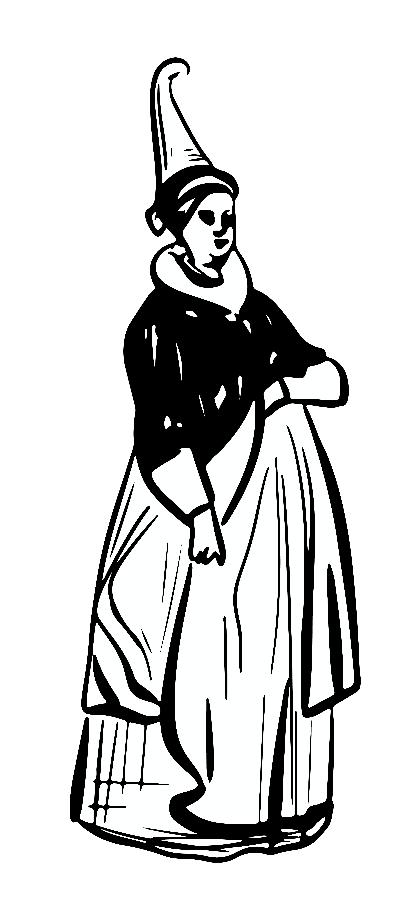
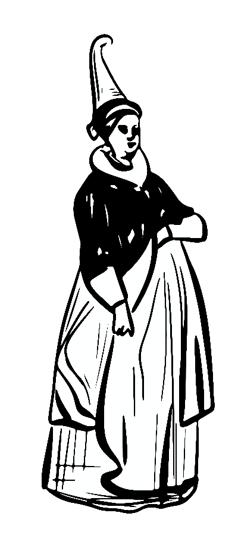

Introduction
In 1590 when King James VIs ship was caught in a storm thought to be caused by the work of witches, witchcraft accusations increased around Scotland. While the King was starting to think more negatively about witches, all around Scotland the church was spreading fear about the devil. The fear of the devil extended to include people who were thought to be involved with the devil, witches; people who were thought to have made a pact with the devil in order to get their powers. This fear of the devil spread like wildfire around Scotland seeping into even the smallest settlements, causing neighbors to look to each other in search of purging anyone related to the devil. Accusation started with “the "neighborhood witch,"” who would be denounced for causing harm to “community members, usually after quarrels that led to verbal abuse and curses,” (Martin 7) or after a negative event in the settlement like the crops failing. People like Isabel Young, who was a married mother with four sons and was of middling socioeconomic status, was tried and executed for witchcraft in 1629. Like most people at the time her family was deeply “intertwined” in the lives of other families in their town through “webs of debt, renting, borrowing, and quarreling,” but unluckily for Isabel around “half” of the people in her town, including the richest man, turned against her (Ring et al. 13). She was accused of “conducting a protective magic ritual on her cattle in front of [her] barn,” (Ring et al. 13), property damage (Ring et al. 14), and attempted murder of her husband (Ring et al. 15). There were many accusations against other witches like the ones against Isabel, the most common types of accusations were about Charming, Sorcery, Folk Healing, Neighborhood Dispute. Throughout our sources, there were lots of examples of accused people like Isabel who were of middling or poor socioeconomic status that were executed, in fact they were the majority. In contrast, it was rare for a person of high socioeconomic status to be accused at all, and then executed. This is one of the reasons that we wonder if socioeconomic status might have played a role in accusations and trial outcomes along with other factors like bias. Our goal with this project is to study the effects that socioeconomic status (e.g., class, occupation) of an individual and bias had on witch accusations and trial outcomes (e.g., execution, banishment, released) in 1563-1736 Scotland. We ultimately want to learn how much status and bias played in the number of accusations and the outcomes of trials for the accused witches. Our analysis uses the dataset The Survey of Scottish Witchcraft by Julian Goodare, Lauren Martin, Joyce Miller, and Louise Yeomen completed in 2003. This dataset contains hundreds of entries on accused witches and their trials, listing important details such as socioeconomic status, occupation, and outcomes.
Overall, most of our sources supported the same theory: economic status of the area, socioeconomic status of the accused, behavior of the accused, and occupation of the accused may have affected the accusations, trials, and outcomes of the Scottish Witches. Many sources found that when the weather was good, crop yields were high, and the economy was doing well, then the number of people accused of being witches went down. But, when the weather was poor and the economy was down, more people were accused of being witches because witches were thought to control weather. (Oster) Additionally, witch hunting was encouraged by the church, because of the fear of the devil and its relationship with witches. King James also encouraged witch hunting because of his experiences with witches and their relationship with the devil. Both the church and the King left most trial outcomes up to the local ministers, which allowed the ministers personal beliefs and bias to affect the trials. It was found that most witches were of poor or middling socioeconomic status and were having trouble with neighbors, arguments about livestock, stress, etc., causing the ministers to not look favorably on the witches and leading to worse outcomes. (Henderson) (Martin) The biggest contradiction we found in our sources was related to weather: some of our sources suggested that good weather increased the number of trials, because a better economy caused by better weather led to more money to pay for witch trials (Oster). Other sources suggested the opposite, noting that a worse economy caused by worse weather led to more hatred and thus to more witch trials (Cornelius). Both theories may have some truth to them. Overall, all of our sources seem to agree that socioeconomic status and similar characteristics, such as being a servant or midwife, could have affected accusations and outcomes. Other scholars might agree or be neutral on this topic “because there has not yet been much research” (Goodare, 292). This means that this theory has not been explored as much as it has been mentioned or implied. While most of our sources confirmed or suggested our theory on the Scottish Witchcraft Trials, we still have some more detailed questions they couldnt answer. For example, does the socioeconomic status of the accused or other similar characteristics actually affect the accusations and outcomes? Or, was some other factor in play that still needs to be identified through studying the dataset? Why do most people focus on the supposed connection between witches and the devil and not look at other characteristics? Because our topic has not been researched deeply, we will need to investigate the dataset and other sources to make these connections.
This project is important because it adds a socioeconomic perspective on the Scottish Witchcraft trials which is a lens that has not been deeply explored yet. After diving into the literature review, it became very apparent that the amount and level of research with this viewpoint is scarce. As previously stated, the crop yield has been said to have affected the economy of Scotland. According to a number of sources, when crops flourished, there were far less accusations. This reasoning behind the accusation goes to show the bias involved within the witchcraft trials. This project's goal is to help others understand the unjust motives and reasoning when it comes to the accusation of particular witches whether that be occupation, class, economic status of the area, or their personal behavior. Elements relating to the economy of Scotland and the witches is one particular form of bias that we have explored in regards to Witchcraft in Scotland. Socioeconomic impacts have not often been taken into account when researching and understanding the accusations as well as the prosecution of Scottish Witches, making this perspective unique. Furthermore, there is a larger idea connected to this viewpoint; the correlation between a struggling economy and the increase of discrimination towards particular groups of people.
Timeline
As shown in the timeline, the number of accused witches per year fluctuates drastically. There are many reasons for the ups and downs. One being the crop yield of that particular year. Some researchers hypothesize that there is a correlation between low crop yield and an increase in witch accusations. This correlates with the theory that the economy has much to do with the bias involved with the witch trials. Another reason for this variation is due to who was on power at the time. In regards to witchcraft came a lot of religious bias. The leaders during the years had a lot of impact on how harsh and abundant the accusations were each year. To be specific, Scottish Presbyterians were substantially more active in persecuting alleged witches during periods when they were excluded from power (Kulkarni, 1). This timeline allows you to see the drastic fluctuation from year to year during the Scottish Witchcraft trials.
Socioeconomic Status Map
 

Accusation Characteristics Map
It was made clear in our research that during this time period the majority of Scotland was poor, relying heavily on successful agriculture harvests. This was also a time when people renting land from Husbandmen (e.g. lesser landowners) as free tenants (e.g. cottars and grassmen) made up the majority of the working population, and these landlords had considerable control over their tenants. Additionally, Society in the burghs was headed by wealthier merchants, who often held local office. Most people in this time relied on local production of their needs causing ties between populations in a settlement to be strong through familiarity and debt. Once the fear of the devil and a witches relationship with it spread throughout Scotland people in these settlements began to accuse eachother of witchcraft, but whether these accusations were because the person was a “witch” or because there was bias or grudge involved is what we are looking into. Through our sources and looking through the dataset we have found that most accusations fall into a few similar categories: Charming, Sorcery, Folk Healing, Neighborhood Dispute.

Examples of Witches
For most witches' accusations stacked up or time, their accusers could be anyone from their settlement: neighbor, friend, family member. While the speed of this process might have changed depending on the settlement and the years (like years of panic), in some places an accused person might not have been tried as a witch until 2-10 years after the initial accusation. One reason accusations were made slowly over time without action was because “local communities could live with witches. People might use charms to protect themselves,” (Goodare, 298). Additionally, most “witchcraft accusations grew out of decades of quarrels and curses between neighbors'' (Martin, 9). Because most people who were accused “had little valuable property, and trials were costly,” (Christian, 3), likely lack of money was a factor in causing accusations to stack up over time as well. Lastly, it also was shown that outside of years of panic a witch “needed time to build up a reputation,” (Goodare, 292).
Bessie Graham (1650)
Status: Middling
Occupation: Healer
Accused: Folk Healing, Charming, Maleficium, Neighborhood
Dispute.
Outcome: Guilty. Executed.
Story: Bessie was from Dumfries and worked as a
professional healer with her husband, they were well paid. They had been performing folk healing for
years, and getting accused of witchcraft for years before their trial. But finally her settlement
had enough and came forward with claims against the couple. Bessie was pronounced guilty in 1650 and
was executed with her husband, Thomas Paton.
Beatrix Leslie (1661)
Status: Lower
Occupation: Midwife
Accused: Demonic, Charming, Folk Healing, Maleficium, Sorcery
Neighborhood Dispute, implied by another witch.
Outcome: Guilty. Executed.
Story: Beatrix was
from Newbattle, Edinburgh she was married and thought to be an older woman with a son. She was
implicated by another witch during a year of panic and witch hunts with no previous accusation
before her implication. Once she was accused her people in her settlement turned against her and
came forward with all these claims for her accusation. She was pronounced guilty and executed 1661.
Helen Isbusterr (1635)
Status: Very Poor
Occupation: Vagabond
Accused: Demonic, Maleficium, White Magic, Charming,
Sorcery, Murder.
Outcome: Guilty. Executed.
Story: Helen was a very poor vagabond from Orkney.
She was accused of witchcraft after being in the wrong place a few too many times. Helen had
received a few accusations over the years and was finally found guilty and executed in 1635.
Correlations
This visualization is helpful to show the correlation between certain words like “servant”, “middling”, and “very poor” with words like “executed” and “guilty”. This thicker the line, the more relation the words have. This shows that your particular occupation or status has much to do with how you are prosecuted. It is clear through this analysis that socioeconomic characteristics do have a relationship with the result of the accusation and prosecution.